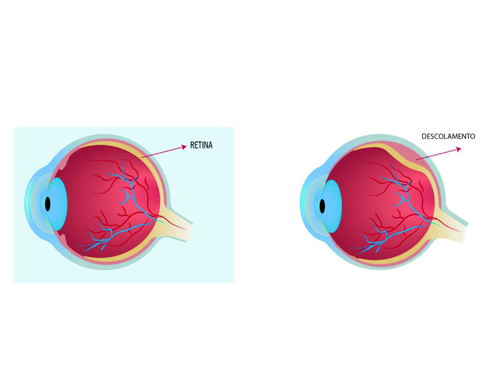

DEFINIR
O que queremos demonstrar?
Comparar como uma mudança de posição da superfície sensora altera a quantidade de luz registrada.
ESTUDO INTERATIVO / VISÃO / TECNOLOGIA
Mova o cursor. Depois, entre no olho e acompanhe o que acontece quando a luz chega até uma retina que não está mais em sua posição normal.
ABRIR PROTOCOLO ↘PROTOCOLO 01 / ANATOMIA
Arraste o scanner pela ilustração. O painel mostra o papel da estrutura que estiver sob análise.
ESTRUTURA DETECTADA
Primeira superfície transparente do olho. Participa fortemente da refração da luz que entra no sistema óptico.
PROTOCOLO 02 / FÍSICA & TECNOCIÊNCIA
Este modelo simplificado mostra refração e formação de imagem. Ajuste o cristalino e lance feixes até observar onde eles encontram a retina.
O traçado é uma representação didática, não um simulador clínico de óptica ocular.
PROTOCOLO 03 / DESLOCAMENTO
Em vez de apenas “ligar um filtro”, o laboratório relaciona uma região da retina a uma alteração representada no campo visual. A posição é invertida no modelo por causa da formação invertida da imagem na retina.
As alterações acima são ilustrações educativas e variam de pessoa para pessoa. Sintomas súbitos podem exigir atendimento urgente.
REFERÊNCIA VISUAL
Use o visor para comparar uma retina em posição normal com uma representação de descolamento. As imagens servem como referência de estudo, não como ferramenta de diagnóstico.

RETINA / REF_01PROTOCOLO 04 / CONEXÃO DAS DISCIPLINAS
Aqui elas deixam de ser caixas independentes. Inicie o experimento e acompanhe a mesma informação mudando de forma.
Refração, lente e formação de imagem definem onde a energia luminosa chega.
Um sensor de luz transforma a intensidade recebida em um valor elétrico mensurável.
O código lê os dados, compara valores e transforma números em uma resposta visível.
PROTOCOLO 05 / ROBÓTICA
Proposta de protótipo: um modelo físico de olho com fonte LED, lente e uma “retina” formada por sensores de luz. Uma parte da retina pode mudar de posição para comparar as leituras.
Comparar como uma mudança de posição da superfície sensora altera a quantidade de luz registrada.
LED → lente → conjunto de sensores. A estrutura deve permitir alterar a posição de um trecho da “retina”.
Cada sensor gera uma leitura. O microcontrolador registra e compara os valores.
Normalizar leituras, destacar diferenças e mostrar o resultado em LEDs ou display.
Repetir o teste com retina alinhada e deslocada, mantendo as demais condições o mais constantes possível.
Relacionar as diferenças observadas ao foco da luz, à posição do sensor e ao processamento dos dados.
Proposta pensada para kits escolares de baixa tensão. Use componentes e orientações disponibilizados pelo professor ou laboratório.
PROTOCOLO 06 / FLASHCARDS OBRIGATÓRIOS
Os flashcards continuam no projeto, mas viraram um baralho de investigação. Escaneie uma carta, pense primeiro e só então revele o verso.
O descolamento de retina costuma ser indolor. Alterações visuais súbitas são sinais importantes de atenção.
PROTOCOLO 07 / AVALIAÇÃO
Não é um quiz de clicar e esquecer. O teste mistura interpretação, escrita, associação, ordem lógica e interação direta com o olho.
AVALIAÇÃO INTERATIVA
Respostas discursivas podem ser avaliadas por IA quando o Supabase estiver configurado. Sem o backend, o site usa uma correção local por conceitos-chave para continuar funcionando no GitHub Pages.
RELATÓRIO FINAL
PESQUISA / FONTES
Conteúdo revisado em agosto de 2026. O site é educativo e não substitui avaliação profissional.